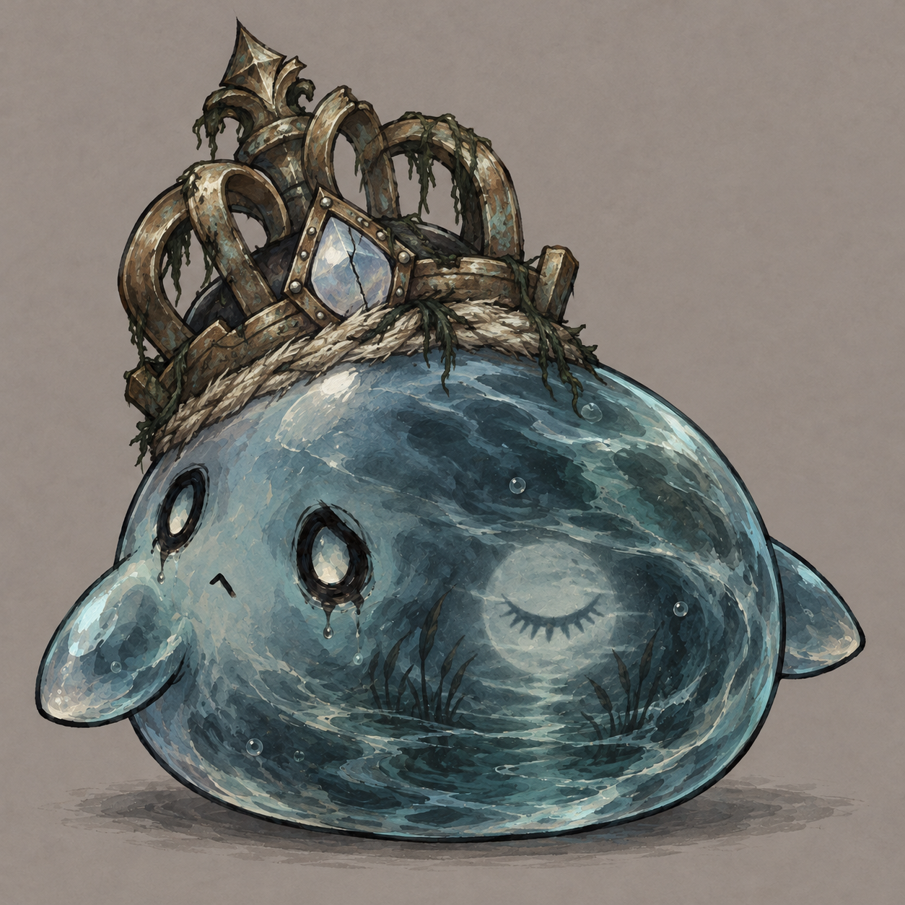
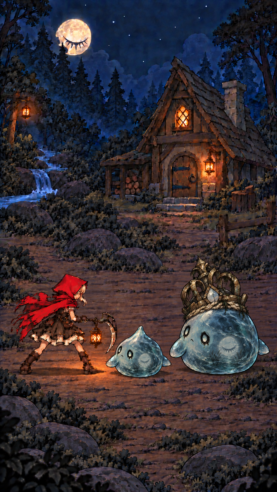
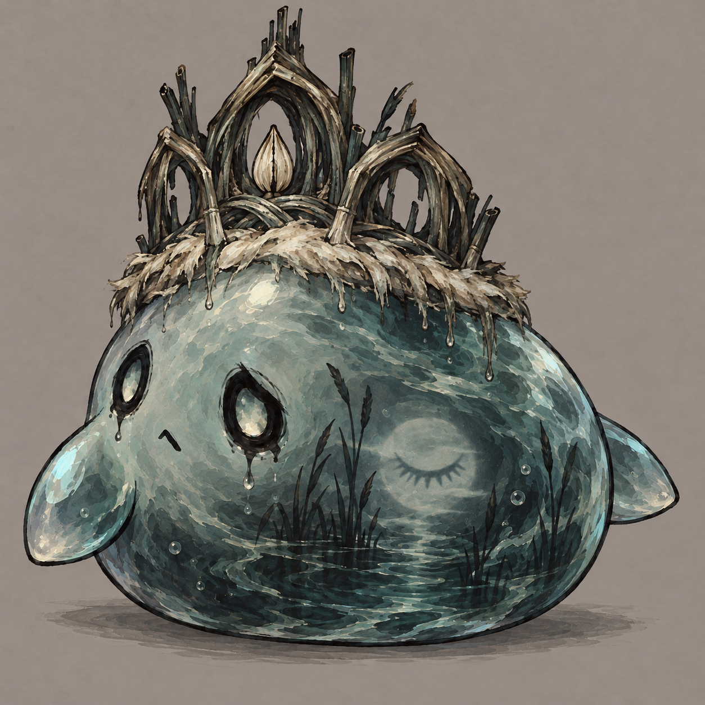
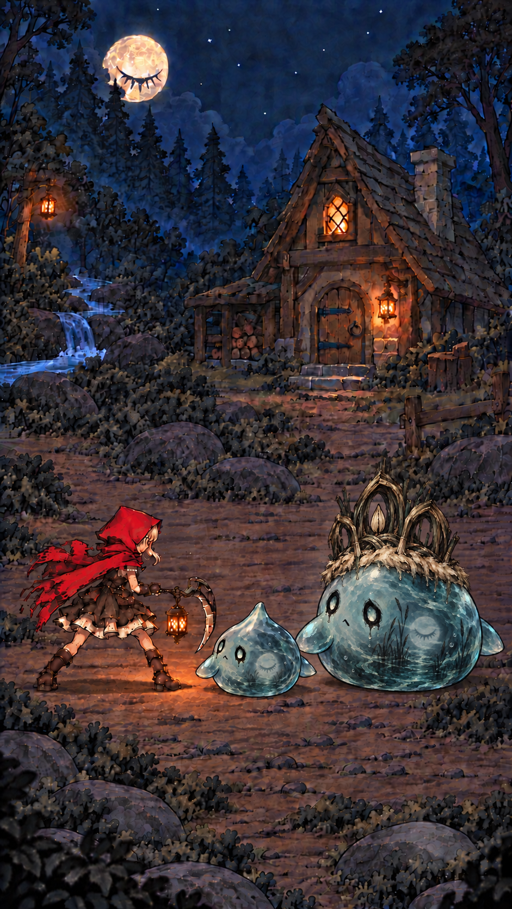
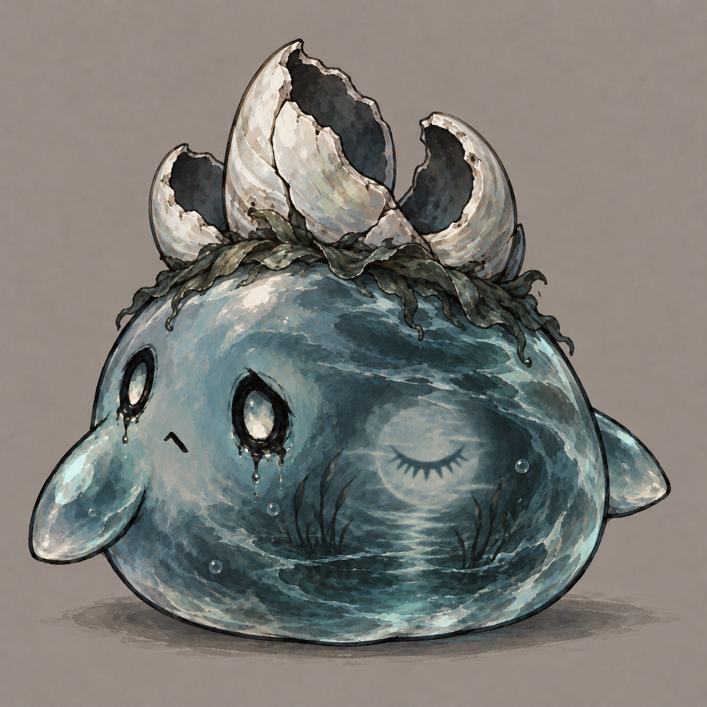
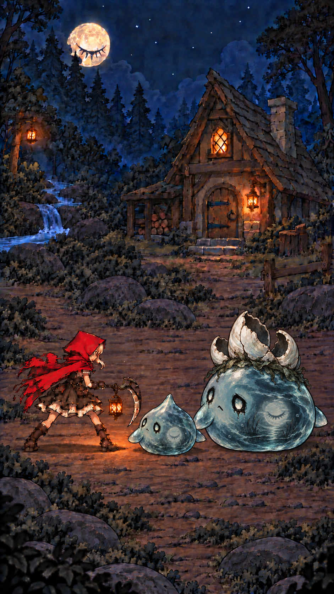

MONSTER CONCEPT / boss_8020 / 待选方向
与 MobMurmlet 同源的小 BOSS。保留烟蓝水体、悲伤空眼和虚化闭眼月，取消悬浮顶珠。
尺寸目标：含冠总高约普通水团 2–2.3 倍；身体本身也明显增大。战斗图加入普通水团与小红帽作参照。
以下均为概念效果图，并非 Unity 实景。点击图片查看原图。设计与骨架说明 · 生成提示词
旧铜王冠 · 失落王权 · 推荐


芦苇祭冠 · 溪畔仪式


空壳白冠 · 夜景辨识

